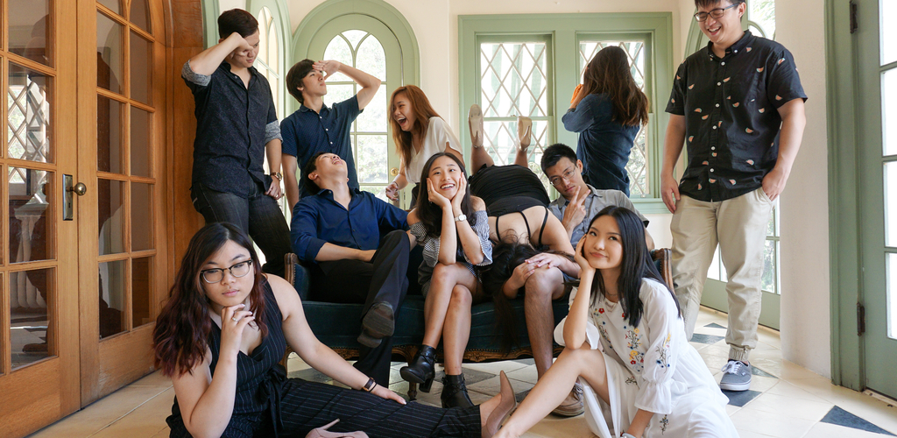

APPLICATIONS ARE NOW OPEN!
GOOD LUCK!
GOOD LUCK!
Internal JO
- The JOs for VP-I are closely involved in the planning and logistics of TASA’s largest events, Night Market and Taste of Taiwan, in which we recreate the grand night markets of Taiwan with food, games and performances.
- If you are organized, motivated, have creative ideas and want to learn more about planning large-scale events, becoming a VP-I JO would be ideal.
Finance JO
- Finance JOs work under the Finance Director of TASA to help manage TASA's budgeting and funds.
- You will also help keep track of event costs and decide what events are financially feasible, and help with contacting businesses to promote TASA for profit shares and fundraisers.
Web JO
- JOs under Web Director will be involved in updating and maintaining the TASA website with upcoming event details.
- If you have some web experience, simply want to gain experience, or have creative ideas to improve our website, this would be a good position for you!
External JO
- VP-E JOs primarily communicate with other organizations regarding mixers and club parties. Members in external also are in charge of communicating with TASA alumni and setting up events involving TASA alumni.
- You will also help with finding and choosing the best performers for Taste of Taiwan.
Marketing JO
- Marketing JOs will be involved in designing promotional material such as fliers and designing t-shirts for Night Market and Taste of Taiwan.
- Working under marketing gives you a creative outlet to promote TASA GM's and events through designing event banners throughout the semester.
Media JO
- Media JOs help with taking pictures at events TASA hosts or participates in and posting them on social media. The members in media are primarily in charge of managing TASA's social media presence.
Special Events JO
- As a Special Events JO, you help with the planning of socials, GMs, icebreakers, retreats, and banquets.
- Creative and fun ideas are ideal for this position, as we will be making sure TASA members have fun!
Communications JO
- As a Communications JO, you work under TASA's Communications officer to send out newsletters to all members of TASA throughout the school year, and take meeting minutes to document discussions during meetings involving all TASA officers and JO's.
- Working under communications also allows you to learn about managing TASA's family system, whether it be through updating family points or communicating directly with TASA family heads and general members as needed.